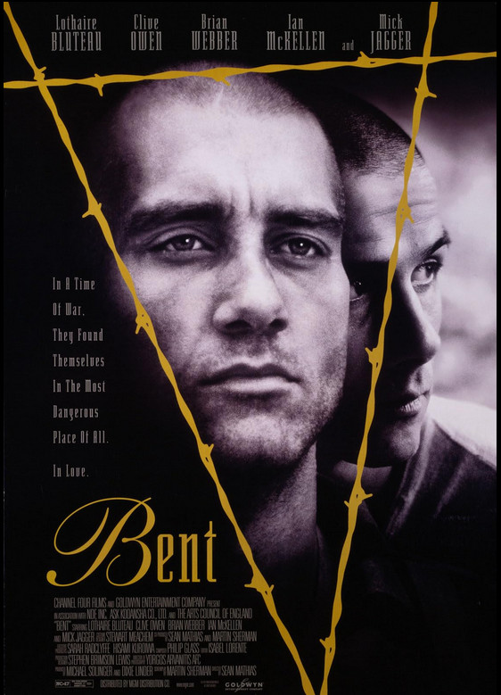

Bent

Sean Mathias
1997
108 minutes
Wikipedia link
IMDB link
TV Tropes link
This is text.
Time to choose something different:
- Welp, that was uplifting. Maybe we could watch something a little more kid-friendly instead? - Turn to section 49
- I need something different. German is fine, but maybe shorter and a little more uplifting? - Turn to section 106
- Seeing them move those rocks back and forth is a good reminder that endless tidying for others can be bad for your mental health. - Turn to section 31